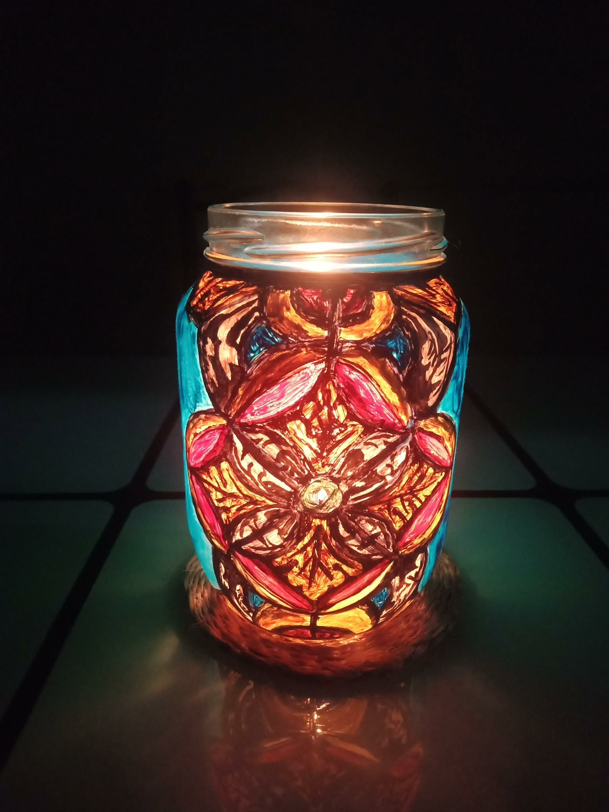
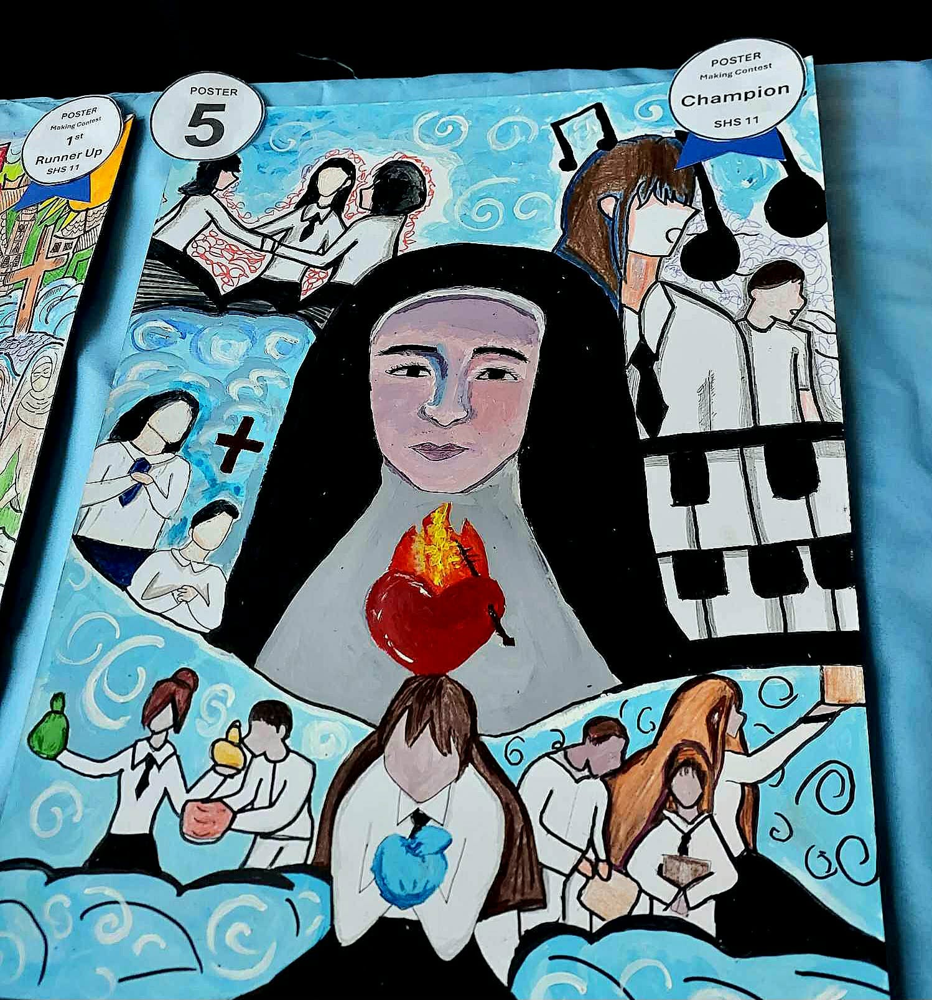
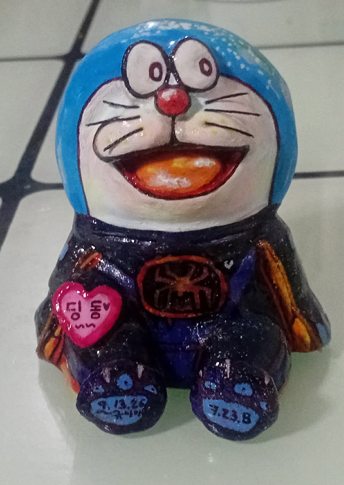

01 — GET TO KNOW ME About Me
Hi! I am Jianelle Mari G. Enriquez, but you can call me
Jia for short.
I am a 19-year-old second-year Bachelor of Arts in Multimedia
Studies student at UP Open University.
I enjoy expressing myself through different forms of art. I love painting, drawing, and gaming, and I find creativity in many aspects of everyday life.
02 — THE LITTLE THINGS Things I Love
Art & Creativity:
- Painting
- Drawing
- Creative projects
Interests:
- Watching movies
- Gaming
- Animation
People:
- Family
- Friends
- Boyfriend and pets
03 — A COLLECTION OF MY WORK Passion Projects

Stained Glass Candle Holder
A glass-painted candle holder designed to glow like the colorful stained-glass windows found in churches.
May 21, 2022

Mother Consuelo Portrait Painting
A large painting of Mother Consuelo that I created in Grade 11 and that won champion in an art competition.
June 23, 2023

Doraemon Clay Sculpture
A clay sculpture of Doraemon that I made as a personal gift for my boyfriend.
October 2, 2026